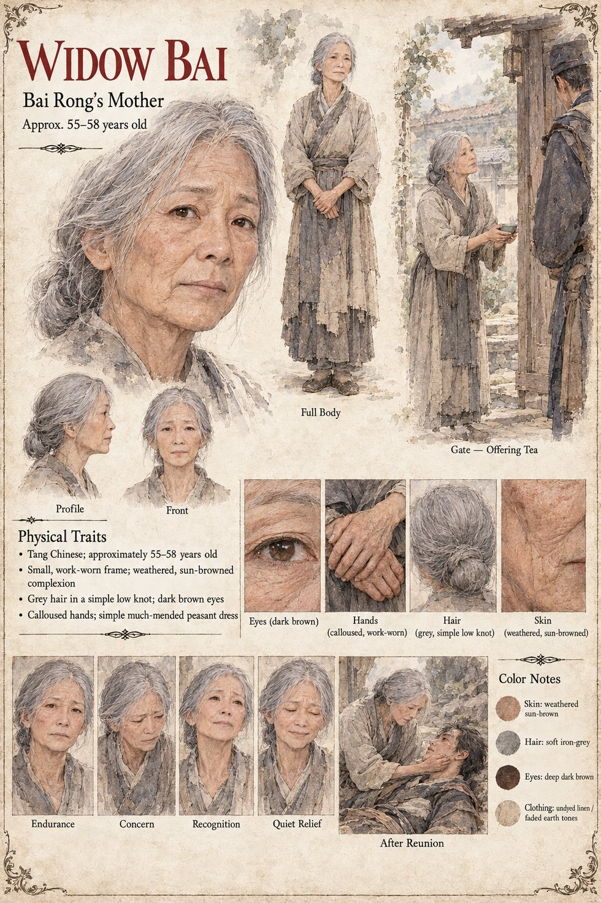

Widow Bai
Bai Rong's mother · a widow of the valley · 55–58 by her sheet
Meets the county tax collector's men at the gate with the same tea she has offered every collector who ever came to that door, a habit thirty years of hardship has never taught her to drop even when there is nothing in the house worth protecting the ritual for. The loom and the two remaining goats are all that stand between the family and the sum, and her son stands in the doorway behind her with his arms crossed, saying nothing. When he puts a garrison-trained man on the ground she does not ask what he has done, then or in any night after, though twice he catches her looking at his hands the way a woman looks at a tool she no longer recognizes in her own kitchen.
She goes with him and what remains of the herd to a hollow in the hills rather than wait in the valley for whichever kind of attention arrives first, and is still selling what cheese she has when a passing trader carries the news of the war. Bai Rong comes home to her for eleven days and leaves on the twelfth with her blessing and a single unspent silver coin. The sheet draws a small, work-worn woman with weathered, sun-browned skin, grey hair in a low knot and callused hands, and gives her four expressions, endurance, concern, recognition and quiet relief; its age and build are its own.
Appears In

Related Subjects


Related Records

Widow Bai across the lamplit table, looking at her son's hands the way a woman looks at a tool she no longer recognizes in her own kitchen, and never once asking what they have done.